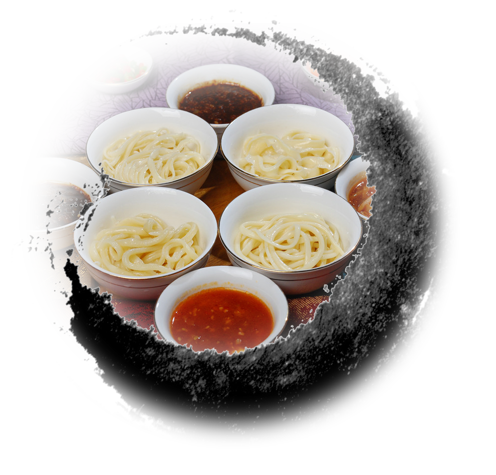

您现在的位置 面面俱到->面食之情->面食情缘
面食情缘

山西面食历史悠久，源远流长，从可考算起，已有两千年的历史了。以面条为例，东汉称之为“煮饼”；魏晋则名为“汤饼”；南北朝谓“水引”；而唐朝叫“冷淘”……
面食名称推陈出新，因时因地而异，俗话说娇儿宠称多，面食众多的称谓与名堂，正说明山西人对它的重视和喜爱。
我作为一个土生土长的山西人，对面食的感情自然也是不言而喻。其实，我本人并不喜欢面食，可能是因为在家的时间太长了，天天能吃到面。也就没什么感觉了，可一次旅行的经历却给我留下的深刻的映像。
我记得当时我去深圳，南方的食物本来就和北方的食物差别大，就连我比较爱吃的大米我都觉得味道不好。所以开始很不适应，后来找到了一家卖山西面食的饭店，顿时倍感亲切，点了一些面食。

尽管事后回忆起来那些面食实在是不怎么正宗，但它们带给我的是一种家的感觉。
回家后，我就一直在想山西面食的问题，一条促进山西产业转型，发展文化产业的新闻更是启发了我。我想在山西面食当中是否也蕴藏着深厚的文化呢？经过寒假的研究性学习，我从历史发展，现代发展和未来前途的角度对山西面食进行了研究，并提出了未来发展的商业畅想。既然杭州可以有丝织文化，蒙古可以有服饰文化，我们山西为什么不可以有面食文化呢？又为何不可以使其成为发展经济，提升形象的利剑呢？